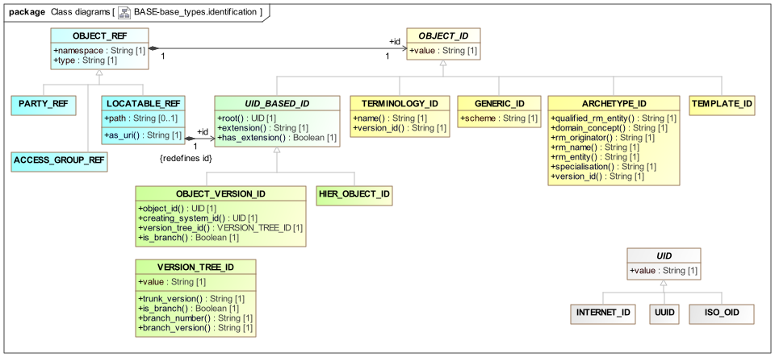

Identification Package Overview The BASE.base_types.identification package describes a model of references and identifiers for information entities and is illustrated below.  Figure 1. base.base_types.identification Package Requirements Identification of entities both in the real world and in information systems is a non-trivial problem. The needs for identification across systems in a health information environment include the following: real world identifiers such as social security numbers, veterans affairs ids etc. can be recorded as required by health care facilities, enterprise policies, or legislation; identifiers for informational entities which represent real world entities or processes should be unique; it should be possible to determine if two identifiers refer to information entities that represent the same real world entity, even if instances of the information entities are maintained in different systems; versions or changes to real-world entity-linked informational entities (which may create new information instances) should be accounted for in two ways: it should be possible to tell if two identifiers refer to distinct versions of the same informational entity in the same version tree; it should not be possible to confuse same-named versions of informational entities maintained in multiple systems which purport to represent the same real world entity. E.g. there is no guarantee that two systems' "latest" version of the Person "Dr Jones" is the same. Medico-legal use of information relies on previous states of information being distinguishable from other previous states and the current state. It should be possible for an entity in one system or service (such as the EHR) to refer to an entity in another system or service in such a way that: the target of the reference is easily findable within the shared environment, and the reference does is valid regardless of the physical architecture of servers and applications. The following subsections describe some of the features and challenges of identification. Identification of Real World Entities (RWEs) Real world entities such as people, car engines, invoices, and appointments can all be assigned identifiers. Although many of these are designed to be unique within a jurisdiction, they are often not, due to data entry errors, bad design (ids that are too small or incorporate some non-unique characteristic of the identified entities), bad process (e.g. non-synchronised id issuing points); identity theft (e.g. via theft of documents of proof or hacking). In general, while some real world identifiers (RWIs) are "nearly unique", none can be guaranteed so. It should also be the case that if two RWE identifiers are equal, they refer to the same RWE, but this is often not the case. For practical purposes, RWIs cannot be regarded as computationally safe for making the inferences described here. Identification of Informational Entities (IEs) As soon as information systems are used to record facts about RWEs, the situation becomes more complex because of the intangible nature of information. In particular: the same RWE can be represented simultaneously on more than one system ('spatial multiplicity'); the same RWE may be represented by more than one "version" of the same IE in a system ('temporal multiplicity'). At first sight, it appears that there can also be purely informational entities, i.e. IEs which do not refer to any RWE, such as books, online-only documents and software. However, as soon as one considers an example it becomes clear that there is always a notional 'definitive' or 'authoritative' (i.e. trusted) version of every such entity. These entities can better be understood as 'virtual RWEs'. Thus, it can still be said that multiple IEs may refer to any given RWE. The underlying reason for the multiplicity of IEs is that 'reality' - time and space - in computer systems is not continuous but discrete, and each 'entity' is in fact just a snapshot of certain attribute values of a RWE, at a point in time, in a particular system. If identifiers are assigned to IEs without regard to versions or duplicates, then no assertion can be made about the identified RWE when two IE ids are compared. Identification of Versions The notion of 'versioning' applies only to informational entities, i.e. distinct instances of content each representing a snapshot of some logical entity. Where such instances are stored and managed in versioned containers within a versioning system of some kind, explicit identification of the versions is required. The requirements are discussed in detail in the {openehr_rm_common}#_change_control_package[Common IM, change_control package]. They can be summarised as follows: it must be possible to distinguish two versions of the same logical entity, i.e. know from the identifier if they are the same or different versions of the same thing; it must be possible to distinguish two versions of the same logical entity created in two distinct systems; it must be possible to tell the relationship between the items in a versioned lineage, from the version identifiers. Referencing of Informational Entities Within a distributed information environment, there is a need for entities not connected by direct references in the same memory space to be able to refer to each other. There are two competing requirements: that the separation of objects in a distributed computing environment not compromise the semantics of the model; that different types of information can be managed relatively independently; for example EHR and demographic information can be managed by different groups in an organisation or community, each with at least some freedom to change implementation and model details. Design This package models only informational identifiers, i.e. transparent identifiers understood by openEHR or related computational systems. Real World Entity Identifiers such as driver’s license numbers are modelled using the data type DV_IDENTIFIER. This is not to imply that such identifiers are any less systematic or well-managed than the system identifiers defined here, only that from the point of view of openEHR, they have the same status as other informational attributes such as name, address etc. of a Person. A key design decision has been to choose a string representation for all identifiers, with sub-parts being made available by appropriate functions which perform simple parsing on the string. This ensures that the data representation of identifiers (e.g. in XML) is as small as possible, while not losing object-oriented typing. Primitive Identifiers Three kinds of types are defined in this package. The abstract UID type and its subtypes correspond to permanent, computationally reliable, primitive identifiers. Such identifiers are regarded as 'primitive' because they are treated as having no further internal structure, in the sense that part of such an identifier is not in general meaningful. The three subtypes UUID, ISO_OID and INTERNET_ID all have these properties, and are commonly accepted ways of uniquely identifying entities in computer systems. In openEHR (and generally in health informatics) they are usually used as parts of other identifiers. UUIDs are also commonly known as GUIDs, which may be used as a synonym within implementations. A consequence of the string representation approach used in these classes is that to set an attribute of type UID from a string value, as would be done when reading from a database, deserialising from XML or another text form, a piece of code that inspects the string structure has to be used in order to decide which of the subtypes of UID it is. This is a safe thing to do, since all three subtypes have mutually exclusive string patterns, and can easily be distinguished. Composite Identifiers The OBJECT_ID type and its hierarchy of subtypes defines all identifier types used within openEHR systems. Most of these have a multi-part structure, and some are 'meaningful' i.e. human-readable. The identifier types can be used to represent identifier values that fall into two groups semantically: those defined by openEHR (which may incorporate generic standard identifiers, such as ISO OIDs etc.) and those defined by external organisations. The groups are as shown in the following table. Identifiers whose form is defined by the HIER_OBJECT_ID type are used both by openEHR and many other organisations. openEHR-defined identifiers Externally defined identifiers OBJECT_VERSION_ID TERMINOLOGY_ID ARCHEYTPE_ID GENERIC_ID HIER_OBJECT_ID HIER_OBJECT_ID UID-based Identifiers The abstract type UID_BASED_ID and its two subtypes HIER_OBJECT_ID and OBJECT_VERSION_ID provide respectively, UID-based identifiers for non-versioned and versioned items. The design of the latter subtype is explained in the openEHR Common IM, change_control package. Archetype Identifiers The ARCHETYPE_ID subtype defines a multi-axial identifier for archetypes, meaning that each identifier instance denotes a single archetype within a multi-dimensional space. The space is can be thought of as 3-dimensional, or as a versioned 2-dimensional space, consisting of the following axes: reference model entity, i.e. target of archetype, defined as: name of model issuer; name of model (there may be more than one from the same issuer); name of concept in model, i.e. class name domain concept; version. The three outer sections are delimited by '.' characters, while the parts of the first section are delimited by - characters. As with any multi-axial identifier, the underlying principle of an archetype identifier is that all parts of the identifier must be able to be considered immutable. This means that no variable characteristic of an archetype (e.g. accrediting authority, which might change due to later accreditation by another authority, or may be multiple) can be included in its identifier. The explicit inclusion of version as part of the identifier means that two 'versions' of an archetype are actually two distinct archetypes. (The rules for archetype versions, revisions and other variants are given in the {openehr_am_id}[openEHR Archetype Identification specification].) Besides used as full physical artefact identifier, an ARCHETYPE_ID can also act as a reference used to match artefacts carrying full identification, {openehr_am_id}#_referencing[as defined] by the interface HRID reference (ihrid_ref) concept. In this context, it provides a shortened form of the full identifier, typically omitting namespace, with partial version information, including only the major version. Examples of archetype identifiers include: openEHR-EHR-SECTION.physical_examination.v2 openEHR-EHR-SECTION.physical_examination-prenatal.v1 Hl7-RIM-Act.progress_note.v1 openEHR-EHR-OBSERVATION.progress_note-naturopathy.v2 The grammar of archetype identifiers is given below in Syntaxes. some archetype authoring tools have historically allowed a nonconforming version part within archetype identifiers which included the lifecycle status. This has led to some archetypes having an incorrect identifier whose version part is of the form .v1draft or similar. Terminology Identifiers The TERMINOLOGY_ID subtype defines a globally unique single string identifier for terminologies. Terminology identifier values may include a version, either as part of the name, and/or according to the syntax defined in section 4.3.12 below. Examples of terminology identifiers include: "SNOMED-CT" "ICD9(1999)" Currently, the best authoritative source for the name part of the identifier (i.e. the part excluding the optional version part in parentheses) is the {nlm_umls_list}[US National Library of Medicine UMLS identifiers for included terminologies]. The scheme defined by the TERMINOLOGY_ID class provides for the situation where major 'versions' of a terminology such as the World Health Organisation’s 'ICD10' and 'ICD10AM' (AM = 'Australian modifications') can accommodate a finer grain of versioning or revisioning, e.g.: "ICD10AM(3rd_ed)" "ICD10AM(4th_ed)" The version part of a terminology identifier is in theory only absolutely necessary for those terminologies which break the rule that the concept being identified with a code loses or changes it’s meaning over versions of the terminology. This should not be the case for modern terminologies and ontologies, particularly those designed since the publication of Cimino’s 'desiderata' cite:[Cimino1997] of which the principle of 'concept permanence' is applicable here - "A concept’s meaning cannot change and it cannot be deleted from the vocabulary". However, there may be older terminologies, or specialised terminologies which may not have obeyed these rules, but which are still used; version ids should always be used for these. At a practical level, versions may be included routinely in some systems to support the potential medico-legal need to prove that a) a given code was in fact defined in the terminology (it may not have existed in an earlier edition) and b) that the meaning assumed in the system was indeed the one assigned to it in the particular version or edition. Equivalence Although there are anomalies in some published terminologies and between some versions or editions of the same terminology, two terminology identifiers that are the same, disregarding the version part, can usually be considered as semantic equivalents in the terminology world. However, depending on which source of strings have been chosen for the name part of the identifier, two different identifiers may also indicate the same terminology, e.g. "ICD10AM_2000" (NLM identifier used in UMLS) and "ICD10AM(2nd_ed)" refer to the same thing. Identifying Versions within openEHR Versioned Containers The OBJECT_VERSION_ID defines the semantics of the scheme used in openEHR for identifying versions within a versioned container, and uses a three-part identifier, consisting of: object_id: the identifier of the version container, in the form of a UID, typically a UUID; creating_system_id: the identifier of the system in which this version was created, of type UID, typically a reverse domain identifier; version_tree_id: the location in the version tree, as a 1- or 3-part numeric identifier, where the latter variant expresses branching; this is modelled using the VERSION_TREE_ID type. The following provides a typical example: 87284370-2D4B-4e3d-A3F3-F303D2F4F34B::uk.nhs.ehr1::2 Under this scheme, multiple versions in the same container all have the same value for object_id, whilst their location in the version tree is given by the combination of the version tree identifier and the identifier of the creating system. The requirements on the creating_system_id part of the identifier are that it be unique per system, and that it be easy to obtain or generate. It is also helpful if it is a meaningful identifier. The two most practical candidates appear to be UUIDs (which are not meaningful, but are easy to generate) and reverse domain name identifiers (these are easy to determine if the system has an internet address, and are meaningful and directly processable, however unconnected systems pose a problem). ISO OIDs might also be used. All of these identifier types are accommodated via the use of UID. A full explanation of the version identification scheme and its capabilities is given in the {openehr_rm_common}#_change_control_package[Common IM, change_control package]. Generic and External Identifiers The GENERIC_ID type provides for identifiers of schemes other than defined concretely in the BASE.base_types.identification package. It has a single method scheme, which may be used to record the identifier type. The names of schemes are not currently controlled. Hierarchical Identifiers The HIER_OBJECT_ID type is defined to support hierarchical identifiers, often based on UUIDs or other similar machine-readable and -resolvable schemes. Composite Identifiers and Case All composite identifiers should follow two rules with regard to case, namely: to be case-preserving - not change case due to persistence, copying, transfer or other computation processes; to be case-insensitive - two identifiers identical apart from case are considered to be identical, and therefore to identify the same thing. The practical consequences of these rules are as follows: mixed-case identifiers may be used, such as archetype identifiers, mixed-case reverse domain identifiers (the INTERNET_ID type); the original case chosen in the letters of identifiers on creation within an openEHR system should be as published by the relevant issuing organisation (e.g. NLM UMLS terminology names are all upper case); if identifiers are used as part of filenames within computer file systems, care must be taken to create and preserve filenames correctly. For this reason, software usually has to handle filename creation and modification differently on Unix-style operating systems, which are case-sensitive (and therefore case-preserving), and Windows-style operating systems, which are case-insensitive but usually case-preserving. These rules do not apply to any identifier constructed in a language in which case does not exist as a concept. For this reason, for identifiers translated in and out of the Turkish language (and possibly in smaller related languages), care must be taken with the 'I/i' characters. Composite Identifiers and Language In all the 'meaningful' identifier types above, with the possible exception of GENERIC_ID, the human-readable identifier sections are assumed to use only the basic latin character set, possibly with the addition of other special characters as allowed by the production rules defined below for each identifier. In most cases, the textual parts of these identifiers will be words from the English language, or else they will be recognisable words from other languages, where necessary alliterated into the latin alphabet. Accented and other diacritical letter variants are not allowed. This limitation is made in the interests of practical computability of identifiers, and is in common with class and attribute naming in shared UML models in the standards world, and also with internet domain names and internet URIs. References All OBJECT_IDs are used as identifier attributes within the thing they identify, in the same way as a database primary key. To refer to an identified object from another object, an instance of the class OBJECT_REF should generally be used, in the same way as a database foreign key. The class OBJECT_REF is provided as a means of distributed referencing, and includes the object namespace (typically 1:1 with some service, such as "terminology") and type. The general principle of object references is to be able to refer to an object available in a particular namespace or service. Usually they are used to refer to objects in other services, such as a demographic entity from within an EHR, but they may be used to refer to local objects as well. The type may be the concrete type of the referred-to object (e.g. "GP") or any proper ancestor (e.g. PARTY). Class Descriptions UID Class Class UID (abstract) Description Abstract parent of classes representing unique identifiers which identify information entities in a durable way. UIDs only ever identify one IE in time or space and are never re-used. Attributes Signature Meaning 1..1 value: String The value of the id. Invariants Value_valid: not value.empty ISO_OID Class Class ISO_OID Description Model of ISO’s Object Identifier (oid) as defined by the standard ISO/IEC 8824. Oids are formed from integers separated by dots. Each non-leaf node in an Oid starting from the left corresponds to an assigning authority, and identifies that authority’s namespace, inside which the remaining part of the identifier is locally unique. Inherit UID UUID Class Class UUID Description Model of the DCE Universal Unique Identifier or UUID which takes the form of hexadecimal integers separated by hyphens, following the pattern 8-4-4-4-12 as defined by the Open Group, CDE 1.1 Remote Procedure Call specification, Appendix A. Also known as a GUID. Inherit UID INTERNET_ID Class Class INTERNET_ID Description Model of a reverse internet domain, as used to uniquely identify an internet domain. In the form of a dot-separated string in the reverse order of a domain name, specified by IETF RFC 1034. Inherit UID OBJECT_ID Class Class OBJECT_ID (abstract) Description Ancestor class of identifiers of informational objects. Ids may be completely meaningless, in which case their only job is to refer to something, or may carry some information to do with the identified object. Object ids are used inside an object to identify that object. To identify another object in another service, use an OBJECT_REF, or else use a UID for local objects identified by UID. If none of the subtypes is suitable, direct instances of this class may be used. Attributes Signature Meaning 1..1 value: String The value of the id in the form defined below. UID_BASED_ID Class Class UID_BASED_ID (abstract) Description Abstract model of UID-based identifiers consisting of a root part and an optional extension; lexical form: root '::' extension. Inherit OBJECT_ID Functions Signature Meaning 1..1 root (): UID The identifier of the conceptual namespace in which the object exists, within the identification scheme. Returns the part to the left of the first '::' separator, if any, or else the whole string. 1..1 extension (): String Optional local identifier of the object within the context of the root identifier. Returns the part to the right of the first '::' separator if any, or else any empty String. 1..1 has_extension (): Boolean True if not extension.is_empty(). Invariants Has_extension_valid: extension.is_empty xor has_extension HIER_OBJECT_ID Class Class HIER_OBJECT_ID Description Concrete type corresponding to hierarchical identifiers of the form defined by UID_BASED_ID. Inherit UID_BASED_ID OBJECT_VERSION_ID Class Class OBJECT_VERSION_ID Description Globally unique identifier for one version of a versioned object; lexical form: object_id '::' creating_system_id '::' version_tree_id. Inherit UID_BASED_ID Functions Signature Meaning 1..1 object_id (): UID Unique identifier for logical object of which this identifier identifies one version; normally the object_id will be the unique identifier of the version container containing the version referred to by this OBJECT_VERSION_ID instance. 1..1 creating_system_id (): UID Identifier of the system that created the Version corresponding to this Object version id. 1..1 version_tree_id (): VERSION_TREE_ID Tree identifier of this version with respect to other versions in the same version tree, as either 1 or 3 part dot-separated numbers, e.g. 1 , 2.1.4 . 1..1 is_branch (): Boolean True if this version identifier represents a branch. VERSION_TREE_ID Class Class VERSION_TREE_ID Description Version tree identifier for one version. Lexical form: trunk_version [ '.' branch_number '.' branch_version ] Attributes Signature Meaning 1..1 value: String String form of this identifier. Functions Signature Meaning 1..1 trunk_version (): String Trunk version number; numbering starts at 1. 1..1 is_branch (): Boolean True if this version identifier represents a branch, i.e. has branch_number() and branch_version() parts. 1..1 is_first (): Boolean True if this version identifier corresponds to the first version, i.e. trunk_version is 1. 1..1 branch_number (): String Number of branch from the trunk point; numbering starts at 1. 1..1 branch_version (): String Version of the branch; numbering starts at 1. Invariants Value_valid: not value.is_empty Trunk_version_valid: trunk_version /= Void and then trunk_version.is_integer and then trunk_version.as_integer >= 1 Branch_number_valid: branch_number /= Void implies branch_number.is_integer and then branch_number.as_integer >= 1 Branch_version_valid: branch_version /= Void implies branch_version.is_integer and then branch_version.as_integer >= 1 Branch_validity: (branch_number = Void and branch_version = Void ) xor (branch_number /= Void and branch_version /= Void ) Is_branch_validity: is_branch xor branch_number = Void Is_first_validity: not is_first xor trunk_version.is_equal(“1”) ARCHETYPE_ID Class Class ARCHETYPE_ID Description Identifier or reference for archetypes. Ideally, these identify globally unique archetypes. When used as a reference, only partial version information is included (major version only), and the namespace is omitted. Lexical form: rm_originator '-' rm_name '-' rm_entity '.' concept_name { '-' specialisation }* '.v' version_id. Inherit OBJECT_ID Functions Signature Meaning 1..1 qualified_rm_entity (): String Globally qualified reference model entity, e.g. "openehr-EHR-OBSERVATION". 1..1 domain_concept (): String Name of the concept represented by this archetype, including specialisation, e.g. "Biochemistry_result-cholesterol". 1..1 rm_originator (): String Organisation originating the reference model on which this archetype is based, e.g. "openEHR", "CEN", "HL7". 1..1 rm_name (): String Name of the reference model, e.g. "RIM", "EHR", "EN13606". 1..1 rm_entity (): String Name of the ontological level within the reference model to which this archetype is targeted, e.g. for openEHR: "FOLDER", "COMPOSITION", "SECTION", "OBSERVATION". 1..1 specialisation (): String Name of specialisation of concept, if this archetype is a specialisation of another archetype, e.g. "cholesterol". 1..1 version_id (): String Version identification of this archetype, representing the major version, e.g. "1". TEMPLATE_ID Class Class TEMPLATE_ID Description Identifier for templates. The template ID must follow the HRID format. The legacy string-based template_id is deprecated. Inherit OBJECT_ID Invariants Template_ID_validity: matches("^(?<namespace>(?:(?:[a-zA-Z_][a-zA-Z0-9_-])(?:.[a-zA-Z_][a-zA-Z0-9_-])]*))::) (?<rm_publisher>[a-zA-Z])- (?<rm_package>[a-zA-Z][a-zA-Z0-9_])- (?<rm_class>[a-zA-Z])\. (?<concept_name>[a-zA-Z][a-zA-Z0-9_-])\. (?<release_version>v\d+(?:\.\d+){0,2}) (?:-(?<version_status>))? (?:\.(?<build_count>\d))?$ ") TERMINOLOGY_ID Class Class TERMINOLOGY_ID Description Identifier for terminologies such as accessed via a terminology query service. In this class, the value attribute identifies the Terminology in the terminology service, e.g. SNOMED-CT . A terminology is assumed to be in a particular language, which must be explicitly specified. Lexical form: name [ '(' version ')' ]. Inherit OBJECT_ID Functions Signature Meaning 1..1 name (): String Return the terminology id (which includes the version in some cases). Distinct names correspond to distinct (i.e. non-compatible) terminologies. Thus the names "ICD10AM" and "ICD10" refer to distinct terminologies. 1..1 version_id (): String Version of this terminology, if versioning supported, else the empty string. GENERIC_ID Class Class GENERIC_ID Description Generic identifier type for identifiers whose format is otherwise unknown to openEHR. Includes an attribute for naming the identification scheme (which may well be local). Inherit OBJECT_ID Attributes Signature Meaning 1..1 scheme: String Name of the scheme to which this identifier conforms. Ideally this name will be recognisable globally but realistically it may be a local ad hoc scheme whose name is not controlled or standardised in any way. OBJECT_REF Class Class OBJECT_REF Description Class describing a reference to another object, which may exist locally or be maintained outside the current namespace, e.g. in another service. Services are usually external, e.g. available in a LAN (including on the same host) or the internet via Corba, SOAP, or some other distributed protocol. However, in small systems they may be part of the same executable as the data containing the Id. Attributes Signature Meaning 1..1 namespace: String Namespace to which this identifier belongs in the local system context (and possibly in any other openEHR compliant environment) e.g. terminology , demographic . These names are not yet standardised. Legal values for namespace are: "local" "unknown" a string matching the standard regex [a-zA-Z][a-zA-Z0-9_.:\/&?=+-]*. Note that the first two are just special values of the regex, and will be matched by it. 1..1 type: String Name of the class (concrete or abstract) of object to which this identifier type refers, e.g. PARTY, PERSON, GUIDELINE etc. These class names are from the relevant reference model. The type name ANY can be used to indicate that any type is accepted (e.g. if the type is unknown). 1..1 id: OBJECT_ID Globally unique id of an object, regardless of where it is stored. PARTY_REF Class Class PARTY_REF Description Identifier for parties in a demographic or identity service. There are typically a number of subtypes of the PARTY class, including PERSON, ORGANISATION, etc. Abstract supertypes are allowed if the referenced object is of a type not known by the current implementation of this class (in other words, if the demographic model is changed by the addition of a new PARTY or ACTOR subtypes, valid PARTY_REFs can still be constructed to them). Inherit OBJECT_REF Invariants Type_validity: type.is_equal(“PERSON”) or type.is_equal(“ORGANISATION”) or type.is_equal(“GROUP”) or type.is_equal(“AGENT”)or type.is_equal(“ROLE”) or type.is_equal(“PARTY”) or type.is_equal(“ACTOR”) LOCATABLE_REF Class Class LOCATABLE_REF Description Reference to a LOCATABLE instance inside the top-level content structure inside a VERSION<T> identified by the id attribute. The path attribute is applied to the object that VERSION.data points to. Inherit OBJECT_REF Attributes Signature Meaning 0..1 path: String The path to an instance, as an absolute path with respect to the object found at VERSION.data. An empty path means that the object referred to by id is being specified. 1..1 (redefined) id: UID_BASED_ID Globally unique id of an object, regardless of where it is stored. Functions Signature Meaning 1..1 as_uri (): String A URI form of the reference, created by concatenating the following: scheme, e.g. ehr:, derived from namespace id.value / + path, where path is non-empty Syntaxes The identifiers defined above are defined in their string form by the following EBNF grammar rules. (* ------------------------- UID, OID, UUID -------------------------- *) uid = iso_oid | uuid | internet_id ; iso_oid = number, { '.', number } ; uuid = hex-number, '-', hex-number, '-', hex-number, '-', hex-number, '-', hex-number ; (* --------------------------- INTERNET_ID --------------------------- *) (* According to IETF https://tools.ietf.org/html/rfc1034[RFC 1034] and *) (* https://tools.ietf.org/html/rfc1035[RFC 1035], as clarified by *) (* https://tools.ietf.org/html/rfc2181[RFC 2181] (section 11), *) (* and relaxation of https://tools.ietf.org/html/rfc1123[RFC 1123] *) (* The syntax of a domain name follows the grammar below. Slightly *) (* reduced for the purpose here, plus allows underscores. *) internet_id = subdomain ; subdomain = label | subdomain, '.', label ; label = alphanum | alphanum-ext-str, alphanum ; (* -------------------- HIER_BASED_ID, UID_BASED_ID ------------------ *) hier_object_id = uid_based_id ; uid_based_id = root, [ '::', extension ] ; root = uid ; extension = ? any string ? ; (* any string *) (* ------------------------- OBJECT_VERSION_ID ----------------------- *) object_version_id = object_id, '::', creating_system_id, '::', version_tree_id ; object_id = uid ; creating_system_id = uid ; (* ------------------------- VERSION_TREE_ID ------------------------- *) version_tree_id = trunk_version, [ '.', branch_number, '.', branch_version ] ; trunk_version = number ; branch_number = number ; branch_version = number ; (* -------------------------- ARCHETYPE_ID --------------------------- *) archetype_id = qualified_rm_entity, '.', domain_concept, '.v', version_id ; qualified_rm_entity = rm_originator, '-', rm_name, '-', rm_entity ; rm_originator = alphanum-str ; (* id of org originating the RM on which this archetype is based *) rm_name = alphanum-str ; (* id of the RM on which the archetype is based *) rm_entity = alphanum-str ; (* ontological level in the RM *) domain_concept = concept_name, { '-', specialisation } ; concept_name = alphanum-str ; specialisation = alphanum-str ; version_id = '0' | non-zero-digit, [ number ] ; (* numeric version identifier *) (* ------------------------- TERMINOLOGY_ID -------------------------- *) terminology_id = name-str, [ '(', name-str, ')' ] ; (* -------------------------- generic rules -------------------------- *) alphanum = letter | digit ; name-str = letter, { letter | digit | '_' | '-' | '/' | '+' } ; alphanum-str = letter, { letter | digit | '_' } ; alphanum-ext-str = letter, { letter | digit | '_' | '-' } ; letter = 'A' | 'B' | 'C' | 'D' | 'E' | 'F' | 'G' | 'H' | 'I' | 'J' | 'K' | 'L' | 'M' | 'N' | 'O' | 'P' | 'Q' | 'R' | 'S' | 'T' | 'U' | 'V' | 'W' | 'X' | 'Y' | 'Z' | 'a' | 'b' | 'c' | 'd' | 'e' | 'f' | 'g' | 'h' | 'i' | 'j' | 'k' | 'l' | 'm' | 'n' | 'o' | 'p' | 'q' | 'r' | 's' | 't' | 'u' | 'v' | 'w' | 'x' | 'y' | 'z' ; number = digit, { digit } ; hex-number = hex-digit, { hex-digit } ; digit = '0' | non-zero-digit ; non-zero-digit = '1' | '2' | '3' | '4' | '5' | '6' | '7'| '8' | '9' ; hex-digit = digit | 'A' | 'B' | 'C' | 'D' | 'E' | 'F' | 'a' | 'b' | 'c' | 'd' | 'e' | 'f' ; Builtins Package Amendment Record